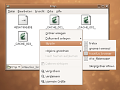

Skripte
Dieser Artikel wurde für die folgenden Ubuntu-Versionen getestet:
Ubuntu 14.04 Trusty Tahr
Zum Verständnis dieses Artikels sind folgende Seiten hilfreich:
Man kann den Dateimanager Nautilus durch Skripte erweitern. Diese Skripte sind einfache ausführbare Dateien, z.B. Shell-Skripte. Sie werden im Verzeichnis ~/.local/share/nautilus/scripts/ (früher ~/.gnome2/nautilus-scripts/) gespeichert und erweitern das Kontext-Menü um den neuen Punkt "Skripte".
Damit neue Skripte verfügbar sind, muss Nautilus neu gestartet werden.
Installation eines Skripts für einen Benutzer¶

Als Archiv vorliegend¶
Zunächst muss das Skript nach ~/.local/share/nautilus/scripts/ entpackt [4] und ausführbar gemacht [5] werden.
Um das Skript zu verwenden, klickt man nun mit der rechten Maustaste  auf eine Datei, die das Skript verwenden soll, und wählt "Skripte -> SKRIPTNAME".
auf eine Datei, die das Skript verwenden soll, und wählt "Skripte -> SKRIPTNAME".
Als Datei vorliegend¶
Falls das Skript auf einer Webseite vorliegt, markiert man den Text des Skripts und kopiert diesen in einen Editor [3]. Das Skript speichert man dann als ~/.local/share/nautilus/scripts/SKRIPTNAME ab und macht die Datei ausführbar.
Um das Skript zu verwenden, klickt man nun mit der rechten Maustaste auf eine Datei, die das Skript verwenden soll, und wählt "Skripte -> SKRIPTNAME".
Installation eines Skripts für alle Benutzer¶
Beispiele¶
Weitere erwähnenswerte Skripte können gerne ergänzt werden.
Fertige Skripte¶
Einige nützliche fertige Skripte:
PDF-Konvertierung - Bilder in PDF-Dateien umwandeln, PDF-Dokumente vereinen
PDF-Komprimierung - die Dateigröße von PDF-Dateien optimieren
Splitten und Vereinigen - Dateien in Nautilus in mehrere Dateien teilen und zusammenfügen
Symbolischer Link - einen symbolischen Link über das Kontextmenü bearbeiten
Volltextsuche - Volltextsuche in Dateien
ExiFotoCopy - Bilder/Fotos von einem externen Datenträger (MMC/SD) oder einer Digitalkamera auf ein anderes Speichermedium kopieren, skalieren und nach den Exif-Informationen (z.B. Aufnahmedatum) in eine Ordnerstruktur einsortieren
Weitere Anregungen sind unter Skripte zu finden.
GNOME-Terminal öffnen als Nautilus-Skript¶
Die Datei ~/.local/share/nautilus/scripts/Terminal mit einem Editor [3] anlegen:
1 2 | #!/bin/bash
gnome-terminal
|
Es öffnet sich das GNOME-Terminal direkt in dem Verzeichnis, in dem man sich gerade befindet. In den offiziellen Paketquellen enthalten ist das Paket nautilus-open-terminal, das die gleiche Funktionalität erfüllt (siehe Terminal).
Dateien von Nautilus aus mit Firefox öffnen¶
Es kann hilfreich sein, Dateien mit Firefox zu öffnen, zum Beispiel Flash-Dateien oder animierte Bilder. Eine Datei ~/.local/share/nautilus/scripts/Firefox mit einem Editor anlegen und mit diesem Inhalt füllen:
1 2 3 4 | #!/bin/bash for FILE in "$@"; do firefox "$FILE" done |
Dateien von Nautilus aus mit Thunderbird versenden¶
Die Datei ~/.local/share/nautilus/scripts/Als_E-Mail_senden mit einem Editor anlegen und mit diesem Inhalt füllen:
mozilla-thunderbird -compose attachment="file://$NAUTILUS_SCRIPT_SELECTED_FILE_PATHS"
Hinweis:
Abhängig von der Thunderbird-Version kann der Aufruf auch lediglich "thunderbird -compose ..." etc. lauten
Leider funktioniert das Versenden mehrerer ausgewählter Dateien nicht
Schnell in den Browser-Nautilus wechseln¶
Die Mini-Ansicht des Nautilus nennt sich Spatial-Modus; für aufgeräumte Ordner ist diese Ansicht tatsächlich besser als ein Browser. Für Ordner, in denen keine Ordnung herrscht oder für Systemarbeiten kann es hilfreich sein, Nautilus im Browser-Modus zu starten. Dieses lässt sich mit diesem Skript lösen. Der Vorteil: Nautilus öffnet direkt im richtigen Verzeichnis.
Die Datei ~/.local/share/nautilus/scripts/Nautilus-Browser mit einem Editor anlegen und mit diesem Inhalt füllen:
1 2 3 4 | #!/bin/bash for FILE in "$@"; do nautilus --browser "$FILE" done |
Datei(en) in Audacious-Playliste hinzufügen¶
Mit diesem Skript kann man eine oder auch mehrere Datei(en) zur Wiedergabeliste von Audacious hinzufügen. Dateiname: ~/.local/share/nautilus/scripts/Audacious-Wiedergabeliste
1 2 3 4 | #!/bin/bash for FILE in "$@"; do audacious -e "$FILE" done |
Bilder umwandeln¶
Photo Converter  verwendet im Hintergrund ImageMagick, um Bilder umzuwandeln.
verwendet im Hintergrund ImageMagick, um Bilder umzuwandeln.
Skript-Verwaltung¶
Nautilus-Actions¶
Das Werkzeug Nautilus Actions Configuration Tool bietet eine grafische Oberfläche zur Verwaltung, Erstellung und Bearbeitung von benutzerdefinierten Nautilus-Skripten.
Nautilus-script-manager¶
Achtung!
Ab Ubuntu 13.10 sollte das Programm nicht verwendet werden, da es noch den alten Pfad ~/.gnome2/nautilus-scripts/ verwendet (1276351). Die Anwendung nautilus-scripts-manager (mit s) hat das gleiche Problem.
Zur Installation [1] ist folgendes Paket notwendig:
nautilus-script-manager (universe)
 mit apturl
mit apturl
Paketliste zum Kopieren:
sudo apt-get install nautilus-script-manager
sudo aptitude install nautilus-script-manager
Die Skripte werden im Ordner /usr/share/nautilus-scripts/ abgelegt. Mit dem Befehl nautilus-script-manager können diese Skripte aktiviert werden [2]. Beispiele:
nautilus-script-manager enable ${Name des Skripts} # Aktivieren eines Skripts
nautilus-script-manager disable ${Name des Skripts} # Deaktivieren eines Skripts
nautilus-script-manager list-available # Liste aller in /usr/share/nautilus-scripts installierten Skripte
nautilus-script-manager list-enabled # Liste aller aktivierten Skripte Technisch gesehen macht nautilus-script-manager nichts anderes, als Links in ~/.gnome2/nautilus-scripts/ anzulegen, die auf die Skripte in /usr/share/nautilus-scripts/ verweisen.
Skripte selbst schreiben¶
Sollte man vorhaben, selbst Skripte für Nautilus zu entwickeln und hier im Wiki zu veröffentlichen, hier noch ein paar Empfehlungen.
Allgemein¶
Skripte sollten als tar.gz- oder tar.bz2-Paket vorliegen
Nach Möglichkeit sollten als Skriptsprachen nur Bash und Python verwendet werden
Externe Programme sollten so wenig wie möglich verwendet werden. Benötigt man Programme, die nicht vorinstalliert sind, so sollten sie über das Paketmanagement verfügbar sein. Das gleiche gilt für Bibliotheken oder Python-Module.
Die Art der Skripte sollte für Nautilus ohne Dateiendung erkennbar sein. Dies ist zum Beispiel durch den Shebang
#!/bin/shbei Shell-Skripten möglich.Die Namen der Skripte sollten eindeutig sein, zum Beispiel Bild rechts drehen
Die meisten Skripte sollten eine graphische Rückgabe ihrer Arbeit liefern. Hierzu eignet sich zum Beispiel Zenity.
Unterstützung für mehrere übergebene Dateien, Ordner und Dateien mit Leer- oder Sonderzeichen im Namen
Parameterübergabe an das Skript durch Nautilus¶
Nautilus gibt beim Aufruf eines Skripts einige wichtige Informationen als Umgebungsvariablen an das Skript weiter. Bei lokalen Pfaden werden zusätzlich die markierten Dateien oder Verzeichnisse als Argumente an das Skript übergeben. Innerhalb einer SSH- oder FTP-Sitzung ist das jedoch nicht möglich, dann ist diesbezüglich nur $NAUTILUS_SCRIPT_SELECTED_URIS gesetzt.
(Lokale) Dateinamen werden der Reihe nach dem Skript angehängt. Das bedeutet, das Skript wird wie folgt aufgerufen:
~/.local/share/nautilus/scripts/Skriptname <Datei1> <Datei2> ... <DateiN>.Andere Parameter sind als Umgebungsvariablen verfügbar
| Erweiterte Parameter (Umgebungsvariablen) | |
| NAUTILUS_SCRIPT_SELECTED_FILE_PATHS | Pfade der gewählten Dateien, die durch eine neue Zeile getrennt werden (falls lokal) |
| NAUTILUS_SCRIPT_SELECTED_URIS | URIs der ausgewählten Dateien. Auch durch eine neue Zeile getrennt |
| NAUTILUS_SCRIPT_CURRENT_URI | URI des aktuellen Orts |
| NAUTILUS_SCRIPT_WINDOW_GEOMETRY | Position und Größe des aktuellen Fensters |
 - grafische Verwaltung von Nautilus-Skripten
- grafische Verwaltung von Nautilus-Skripten- Erstellt mit Inyoka
-
 2004 – 2017 ubuntuusers.de • Einige Rechte vorbehalten
2004 – 2017 ubuntuusers.de • Einige Rechte vorbehalten
Lizenz • Kontakt • Datenschutz • Impressum • Serverstatus -
Serverhousing gespendet von